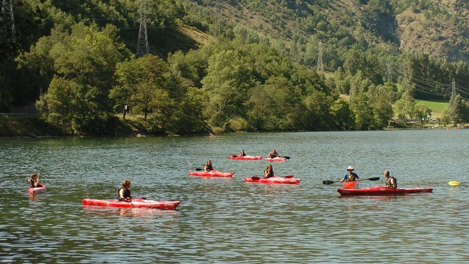

Activitats
-

Descens de barrancs
T’has ficat mai a les entranyes d’una muntanya? Fent descens de barrancs podràs arribar a llocs on mai no hauries pensat i descobrir tot el que amaguen: una fauna i una flora singulars, roques modelades per l’aigua i un entorn inhòspit. Una aventura per als més intrèpids que combina l’emoció, l’adrenalina i la natura.
Per Lourdes Gómez — 31 de desembre de 2024
-

Hidrospeed
Si t’agrada l’adrenalina i l’aigua, has de venir al Pallars Sobirà i provar l’hidrospeed. Amb una taula protectora baixaràs riu avall empès per la força de l’aigua i et sentiràs part de la Noguera Pallaresa. Si tens ganes de viure una aventura des de dins l’aigua amb una emoció constant, l’hidrospeed és la millor manera.
Per Toni Escapa — 30 de desembre de 2024
-

Ràfting
Sent l’aigua a la cara mentre remes amb energia per les aigües braves de la Noguera Pallaresa. Navega per passos estrets tancats per parets de roca, esquiva els obstacles i prepara’t pels revolts del riu. Poques experiències et faran sentir tanta adrenalina com el ràfting al Pallars Sobirà. Vine a viure en primera persona la força del riu de la mà de qualsevol de les nostres empreses especialitzades en ràfting.
Per Sara Rodon — 28 de desembre de 2024
-

Piragüisme aigües tranquil·les
Si t’agrada navegar per aigües tranquil·les, el so del rem quan entra a l’aigua per agafar impuls és l’única cosa que sentiràs mentre fas canoa per la superfície emmirallada del pantà de la Torrassa. Si, en canvi, el que t’agrada és l’aigua en moviment, amb el caiac podràs apuntar-te a algun curs i arribar a navegar per la magnífica Noguera Pallaresa i gaudir del riu com mai no ho has fet.
Per Elena Navarro — 20 de desembre de 2024
-

Curses de muntanya
T’agrada córrer? Si la resposta és sí, no pots deixar escapar l’oportunitat de participar en alguna de les curses de muntanya que s’organitzen al Pallars Sobirà. Les curses de muntanya són molt que més que tan sols córrer: l’autenticitat dels pobles per on passen, l’espectacularitat dels paisatges i la qualitat de l’entorn et faran gaudir encara més d’una experiència ineludible per a qualsevol runner.
Per Cecília Val — 15 de desembre de 2024
-

Passejades a cavall
Puja dalt un cavall, passeja per paisatges idíl·lics i viu la natura de ben a prop. El contacte directe amb els cavalls et farà sentir part de la natura i et transportarà a èpoques antigues on tots els desplaçaments llargs només es podien fer en cavall. Els cavalls són sens dubte animals de gran bellesa i noblesa i passejar damunt d’un cavall és una de les experiències més autèntiques que podràs viure al Pallars Sobirà.
Per Ana Torres — 10 de desembre de 2024